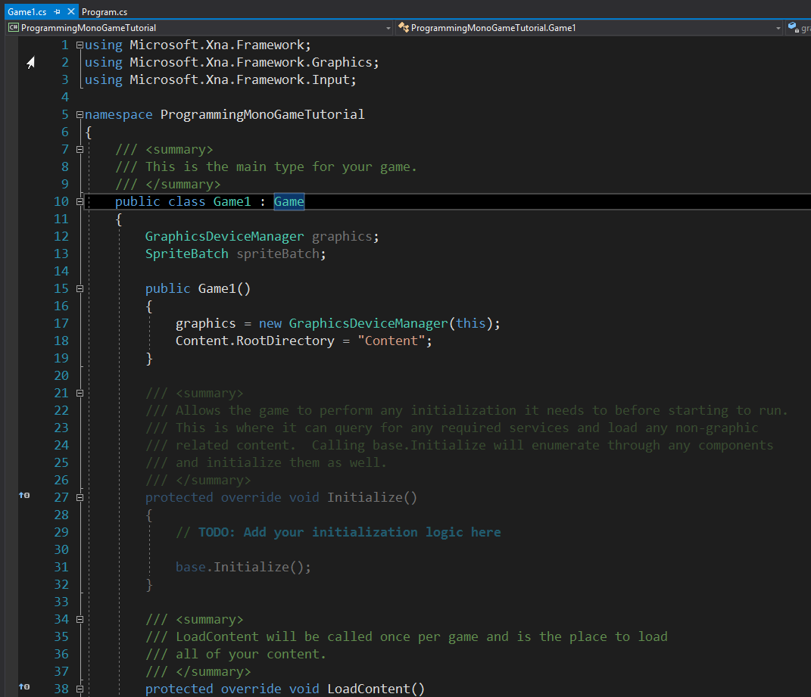

This tutorial will cover how to make a window in Monogame! There is tons of ways to do things in Monogame, but I will show you how I do stuff my way with it. Monogame is a library that lets you draw images to the screen using an easy API (Application Programming Interface) to build games quickly! This first part of the series will show you how to open a new window and draw some sprites to the screen. There is a lot go over in this section, so bear with me!
The first thing we need to do after you install visual studio (You can learn more about it here) You will to download the Monogame SDK (Software Development Kit). Once you do that you can create a new Monogame project inside of visual studio.
Once you install this package, you will have access to the latest version of Monogame. This series uses version 3.6, so just beware of that future versions may change how code works. Just like how you would setup a new C# console application. This time select Monogame and choose Monogame Windows Project. This will create a basic template game with all the things that will help us create a game.

Now that we have the basic template open, we can now add some code to it to start creating a small example game!
First we have to create a new class called Sprite. This class will contain all the information for sprites to render them to the screen. We will be using a few namespace provided by the library.
I removed all the code that is not required in this tutorial just for the time being. But the code will be used much later on and is very important. Right now we want to add some content to our game using the Sprite class that we just created! In visual studio there is a file in the solution explorer called "Content.mgcb" We will be using this file and opening it. This will open up the content pipeline that Monogame installs. You can use this tool to import images and sound effects into your code! Then all you do is drag the file you want in your game to the pipeline tool and click ok! Then press f6 to build this code and it will distribute it to the output executable for runtime!
Here is all the code you need to open a window and render an image the screen. We create a new Sprite class in Game1 and then create an instance of it in LoadContent. Then we load the texture from Content.Load method, you give it the of the image you selected. Then in the draw method in the code you can use the sprite.Draw method to draw the image to the screen. As you might have noticed that the image is was to big for it to be seen correctly (unless you used a really small image) Then you will need to scale is down using the sprite.Scale variables that we created earlier!
And congrats! This is the end of this tutorial. It was just a basic one just to learn about Monogame. There will be future
tutorials on how to do more advanced stuff beyond this, but that is out of the scope for right now.
Code for the main class
Code for the sprite class